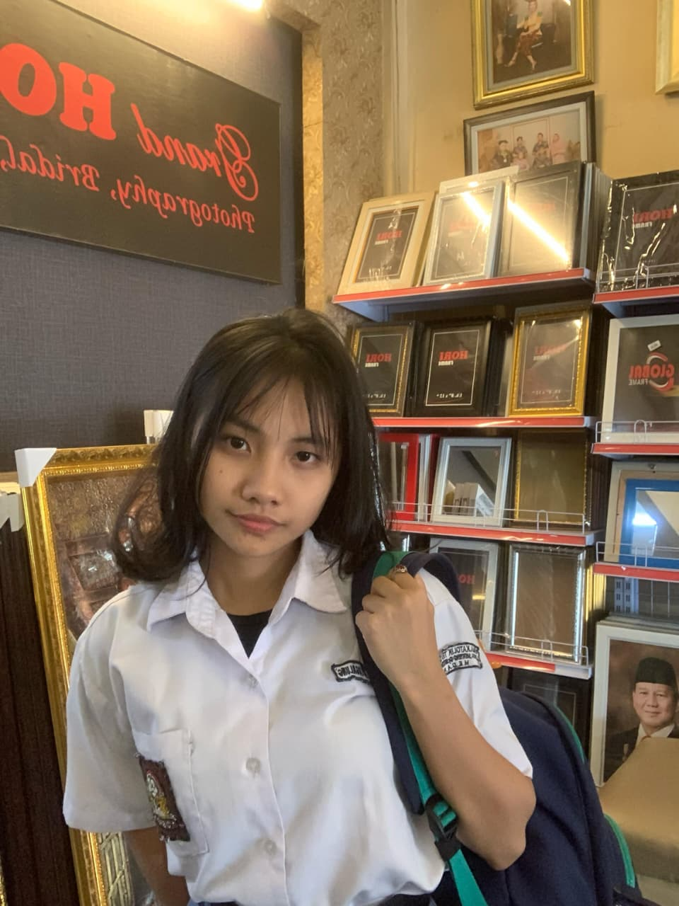

Halo, saya Chintya
Mahasiswa Ilmu Komputer semester awal. Baru belajar dasar pemrograman, senang mencoba hal baru, dan ingin terus berkembang.
Belajar • Bereksplorasi • Berkembang
Tentang Saya
Saya baru mulai belajar komputer dan teknologi. Saat ini fokus memahami dasar pemrograman dan desain sederhana. Senang mencoba hal baru dan ingin berkembang setiap hari.
Travelling
Menyukai perjalanan untuk mencari inspirasi dan pengalaman baru.
Menonton film
Suka mendapatkan makna dari film.
Minat
Belajar pemrograman dasar, desain sederhana, eksplorasi teknologi baru.
LATAR PENDIDIKAN
Sekolah Dasar
SDN Ngronggo 2
2013 - 2019
Sekolah Menengah Pertama
SMP Negeri 5 Kediri
2019 - 2022
Sekolah Menengah Atas
SMA Katolik Trisakti Medan
2022 - 2025
Kontak
Email: chintyagraceyla@gmail.com
Instagram: @grcylach